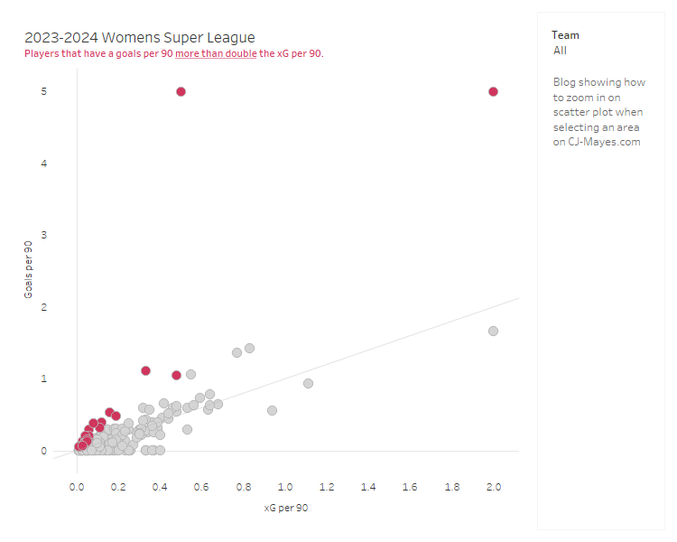
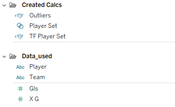
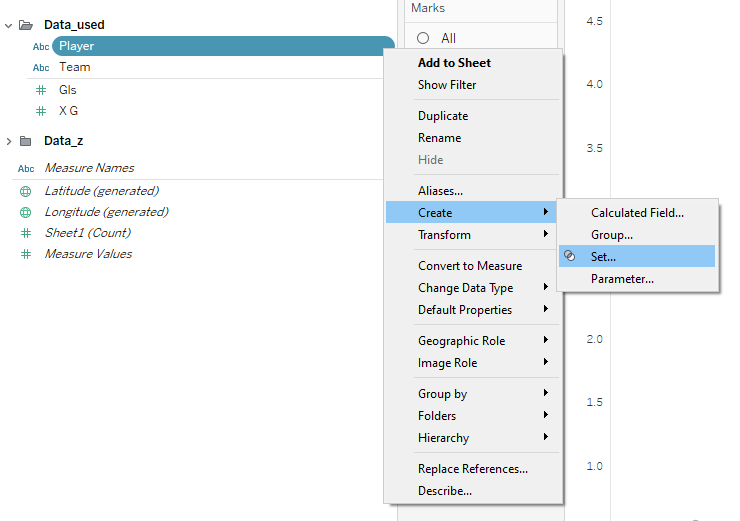
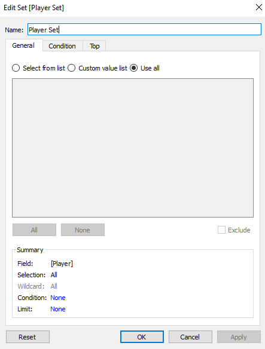
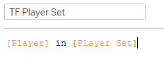
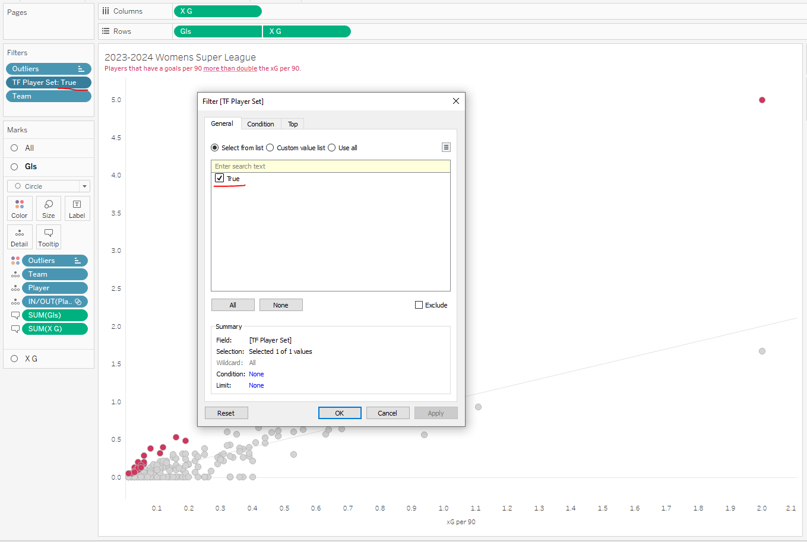
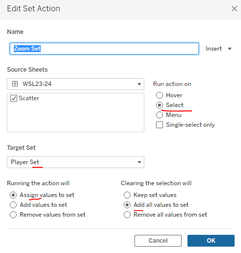
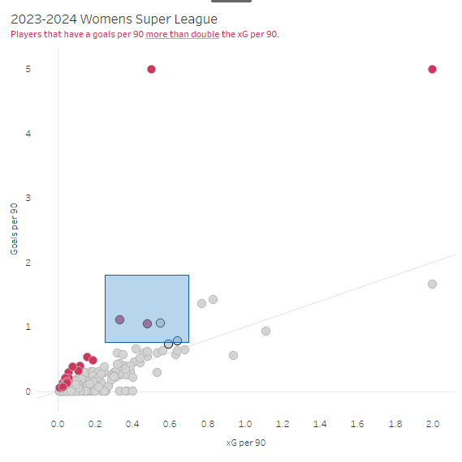
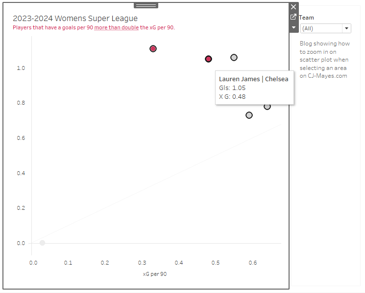

Hi all,
A short Tableau tip for scatter plots this week.

Are you ever faced with a scatter plot where alot of marks are clustered together?
The above chart looks at the womens super league football performance from last year. We plot every players goals per 90. (number of goals they score per 90 minutes on the pitch) against what the xG per 90. (number of goals we would expect them to score based on the Statsbomb model) Each shot therefore is a calculation between 0 & 1.
But when it comes to trying to find stories in the data, its okay at high level. Of course anyone above the line is scoring more per 90 than they were expected. That's great.
But when we try and find the deeper stories that aren't the likes of Isabella Hobson and Denny Draper with a goals per 90 of 5, then we need to start zooming in to some of the more clustered together marks.
These are the steps below to create a zoom functionality on your scatter plot. The data is available in the git repo.

Firstly, create the set of the players.

Select Use all in the Sets editing window, then click OK to save the change.

Create a boolean field, to say whether the player is in the set.

Then add that calculation to the filters page and set it = True.

On the menu select Worksheet > Actions to add a Set Action

Now when you select part of the scatter plot dragging a rectangle around the marks

You'll see it zoom in, and we can look at reviewing other players.

A few other things to note before we close,
It won't work if you fix your axis, for obvious reasons.
You can remove clutter from the page by probably removing players that have 0 goals, goal keepers too.
xG per 90 and goals were used for demonstrative purposes, of course use metrics that you feel are suitable for what you're trying to show!